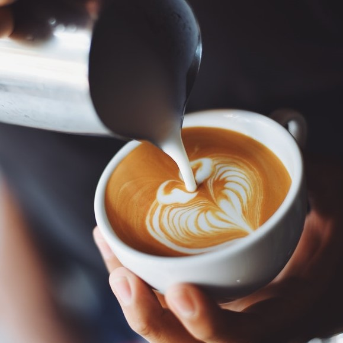
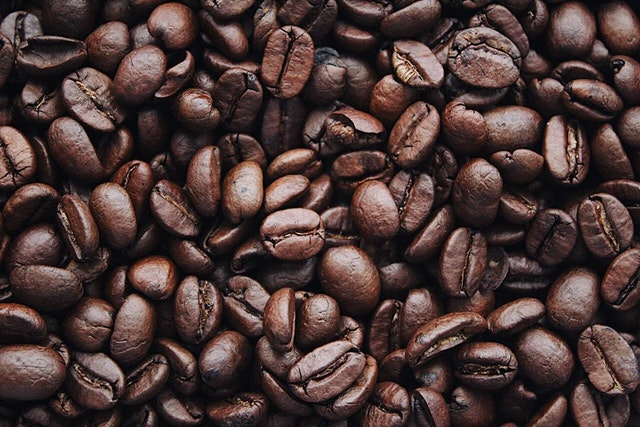

The word coffee entered the English language in 1582 via the Dutch koffie, borrowed from the Ottoman Turkish kahve (قهوه), borrowed in turn from the Arabic qahwah (قَهْوَة).[11] The Arabic word qahwah was traditionally held to refer to a type of wine whose etymology is given by Arab lexicographers as deriving from the verb قَهِيَ qahiya, 'to lack hunger', in reference to the drink's reputation as an appetite suppressant. This Arabic root is also cognate with the Hebrew root k-h-h (כהה), which means "smoky" and "matte".
The earliest credible evidence of coffee-drinking or knowledge of the coffee tree appears in the middle of the 15th century in the accounts of Ahmed al-Ghaffar in Yemen.[2] It was here in Arabia that coffee seeds were first roasted and brewed in a similar way to how it is prepared now. Coffee was used by Sufi circles to stay awake for their religious rituals.[14] Accounts differ on the origin of the coffee plant prior to its appearance in Yemen. From Ethiopia, coffee could have been introduced to Yemen via trade across the Red Sea.[15] One account credits Muhammad Ibn Sa'd for bringing the beverage to Aden from the African coast.
According to one legend, ancestors of today's Oromo people in a region of Jimma in Ethiopia were the first to recognize the energizing effect of the coffee plant.[2] However, no direct evidence that has been found earlier than the 15th century indicating who among the African populations used it as a stimulant, or where coffee was first cultivated.[2] The story of Kaldi, the 9th-century Ethiopian goatherd who discovered the stimulating effect of coffee when he noticed how excited his goats became after eating the beans from a coffee plant, did not appear in writing until 1671 and is probably apocryphal.
In U.S. supermarkets, you’ll typically find two types of coffee beans for sale: Arabica and Robusta. You may be wondering, is there a difference between Arabica and Robusta? Oh, there definitely is. Let’s get right to it.
Arabica is the most popular type of coffee, hands down. Depending on who you ask, many coffee enthusiasts prefer using Arabica beans due to its taste. Typically used for black coffee, Arabica beans have a sweeter, more complex flavor that you can drink straight. Funny thing is, even though it’s the most popular, it doesn’t have as much caffeine as Robusta.
While Arabica is the most popular, Robusta is cheaper and stronger. Because of its bitter flavor, you’ll typically see Robusta used for espresso drinks and in instant coffee mixes. If your Monday morning is lagging, reach for a cup of coffee that uses Robusta beans. Their high caffeine content will wake you right up!